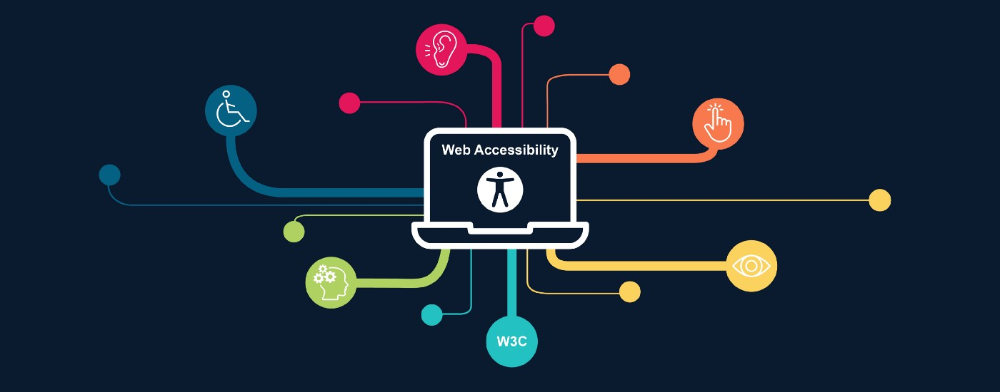

A acessibilidade de um site é importante para que pessoas com deficiência possam ser incluídas de uma melhor maneira na internet. Para demonstrar sua importância, foi criada a cartilha de acessibilidade.
"Acessibilidade na web significa que pessoas com deficiência podem usar a web. Mais especificamente, a acessibilidade na web significa que pessoas com deficiência podem perceber, entender, navegar, interagir e constribuir para a web. E mais. Ela também beneficia outras pessoas, incluindo pessoas idosas com capacidades em mudança devido ao envelhecimento"
Cartilha Acessibilidade na Web - W3C Brasil
